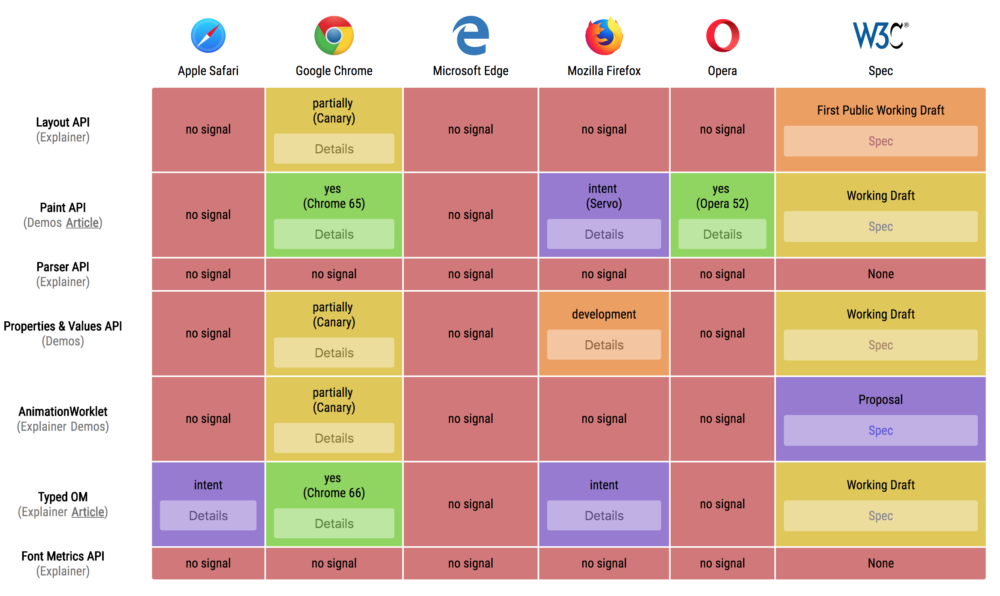
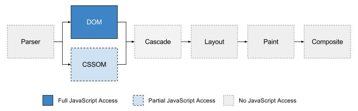

Maybe The Most Exciting Development In CSS You've Never Heard Of
@织语长心 2018-05-18
Maybe The Most Exciting Development In CSS You've Never Heard Of
@织语长心 2018-05-18
好消息： Apple、Google、微软、Mozilla、Opera 都是 Houdini 项目的推动者
坏消息： 目前为止只有 Google Chrome 落地实施了这个计划
各个浏览器厂商的实现程度如下图所示 （ishoudinireadyyet）
autoprefixer）
（灰色区块是还在实现中的标准，目前暂时无法使用）
Old CSSOM
el.style.width = '100px';
typeof el.style.width; // 始终输出 string
window.getComputedStyle(el).width === '100px'
CSS Typed OMNOTE
el.attributeStyleMap.set('width', '100px'); // 或 CSS.px(100)
typeof el.attributeStyleMap.get('width'); // 输出 CSSUnitValue object
el.attributeStyleMap.get('width').value; // 100
el.attributeStyleMap.get('width').unit; // px
el.attributeStyleMap.has('width'); // true
el.attributeStyleMap.delete('width'); // remove width
el.attributeStyleMap.clear(); // remove all styles
el.computedStyleMap().get('width').value // CSSUnitValue object
变量用法：使用 var()
:root {
--main-color: #f00;
--main-bg: rgb(255, 255, 255);
--main-text: 'Hello World'
--margin-top: calc(2vh + 20px);
}
div {
background: var(--main-color);
}
CSS.registerProperty({
name: '--*',
syntax: '', // length、number、percentage、color、image、url、angle...
inherits: false,
initialValue: 'rgba(0,0,0,0)'
})
transition: --my-size .2s ease;CSS.xxWorklet.addModule('xx.js')
if ('paintWorklet' in CSS) {
CSS.paintWorklet.addModule('placeholder-box.js');
} else {
document.body.innerHTML = 'Not support :(';
}
if ('layoutWorklet' in CSS) {
CSS.layoutWorklet.addModule('masonry.js');
} else {
document.body.innerHTML = 'Not support :(';
}
注：无法在 worklets 中打断点或者插入 debugger ，只能用 console.log
registerPaint() 方法给开发者paint() 函数CanvasRenderingContext2D 对象差不多，不过多了些限制background-image: paint(xxx)
// 绘制一个圆
registerPaint('circle', class {
static get inputProperties() { return ['background-color', '--test-color']; }
paint(ctx, geom, props) {
// Change the fill color.
const color = props.get('--test-color').toString();
ctx.fillStyle = color;
// Determine the center point and radius.
const x = geom.width / 2;
const y = geom.height / 2;
const radius = Math.min(x, y);
// Draw the circle
ctx.beginPath();
ctx.arc(x, y, radius, 0, 2 * Math.PI);
ctx.fill();
}
});
// 调用
div { background-image: paint(circle); }
display:flex、display:table...）
registerLayout('masonry', class {
static get inputProperties() {
return ['width', 'height']
}
static get childrenInputProperties() {
return ['x', 'y', 'position']
}
layout(children, constraintSpace, styleMap, breakToken) {
// Layout logic goes here.
}
}
// 调用
div { display: layout(masonry); }